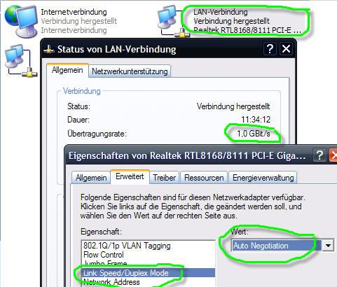
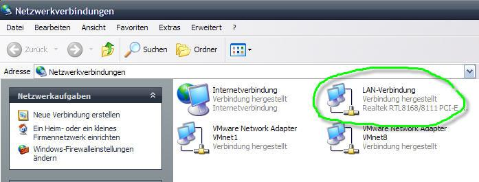
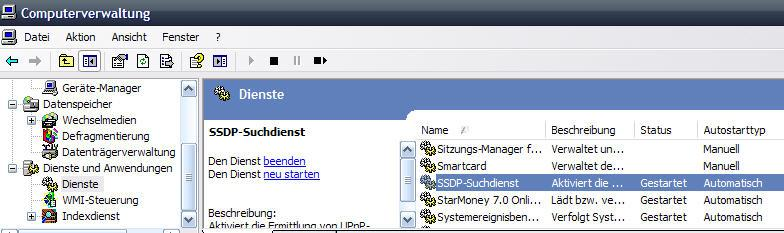

Before installing and running PS3 you should get an overview of the network topology. The Playstation 3 communicates with your computer. If one wants to see web content like YouTube videos an internet connection is required. Most used technology for accessing the internet is an ADSL- or cable-internet-connection. You connect the socket with a modem (ADSL or cable) which will later do the dial in. The modem can be connected directly to the computer. Most people use a WLAN-router to connect. The router is then a gateway to the internet for PS3 and your computer.
In most WLAN-routers nowadays there is an integrated modem and WLAN-accesspoint. The PS3 and notebooks both have integrated WLAN-NICs and can therefore communicate via WLAN when logged in into the access point. The integrated WLAN network card of PS3 is compatible to standard 802.11 b/g. This means a maximum network speed of 54Mb/s. To log in into the WALN-access point you need the following information:
All these settings are defined on your WLAN router / access point. If there are a lot of WLAN-networks in your range try to change to a radio channel with the biggest frequency distance regarding the other channels. Otherwise you may experience poor network quality and speed. Another quality factor is having walls with much ferroconcrete.
You can reach an average speed of 35Mb/s. For streaming HD videos this might be not enough.
The biggest advantage of LAN (wired connections) is its maximum bandwidth of 1000 Mb/s. One big disadvantage is you have to wire all devices, so you need physical access. The devices (router, computer, PS3) have to be wired with Cat5e S/FTP with RJ45-plugs. All devices have to be connected to your router integrated switch. Of course you can extend the switch ports of your router with an uplink to an external switch. If your router switch ports are 100 Mb/s you can tune up maximum speed with an external 1000 Mb/s switch. The link speed and duplex mode should be handled automatically via autonegotiation. Sometimes it does not work correctly and you have to change settings on your computer by yourself.
Example screenshot for changing linkspeed and duplex mode in Windows XP:

If it is not possible to wire your devices but you need a higher network transfer rate there is a solution available called DLAN, also known as powerLAN. In this case you use your power line for sending data across it. Market leader for this technology is devolo. You can get DLAN adapters with up to 200 Mb/s.
There are new 1000 Mb/s powerline adapters available from Belkin!
The router is default gateway for all devices in your home network. The communication is done via TCP/IP protocol. In such a network every device needs an identifier called IP-address. More than one program on your PC can use network at the same time. Therefore these programs also use an identifier called port number. PS3 media server uses port 5001 as default. You can change that if it is already used by another software. Your home network is a private network and therefore uses special IP-addresses. The IP range is limited by the so called subnet mask (e.g. 255.255.255.0). Because nobody can memorize a large numbers of IP addresses (like 74.125.67.100 for google.com) you need another network service called DNS which translates IP addresses into domain names and vice versa. The router forwards DNS requests to a DNS server of your provider and sends the answer to the requesting device.
Setting up an IP-network is not a simple task. There was also a need for automation. DHCP solves this issue. Your router has an integrated DHCP server which sets up every network device (PS3 or computer) automatically. Do not use DHCP and internet connection sharing (ICS), a windows feature, at the same time. ICS has to be deactivated.
It is possible that your computer has more than one network card built in. If you use virtualization software (VMware, Virtualbox, etc.) additional virtual NICs are created.

For security reasons a firewall is integrated in your router. The firewall restrics communication with the internet. Most router integrated firewalls do not restrict communication in your local network. It is also possible that there is a personal firewall software running on your computer. To get UMS running you have to open port 1900 (UPnP discovery) and 5001 (UMS). If you change the port for UMS in configuration you have to change your firewall settings as well.
Windows only discovers UPnP devices in your home network when SSDP service is running. Here is a Microsoft knowledge base article on how to enable SSDP.
